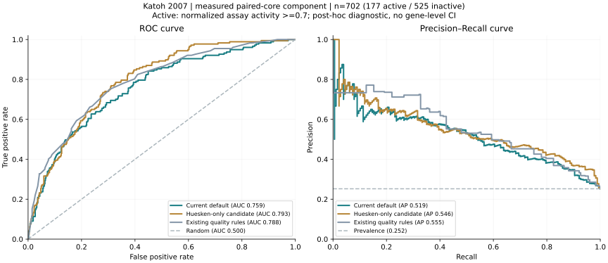

2026-10-28
d5065d0工程
v1 输出与共识语义修复
完善输出正确性、来源追踪和 benchmark 框架。
从多工具共识，到完整双链生成、模型开发和外部实验评估。这里记录每一阶段改变了什么、证据支持到哪里，以及为什么某些方案没有成为默认模型。
更新至 2026-11-06 已冻结实验 · 本次为报告整合，无新增训练当前保留四研究开发得到的默认模型。Huesken-only 候选在 Katoh 的排序分数更高，但仅一个靶标，没有有效的基因级置信区间，也没有完整生成面板的实验预算增益证据，因此不切换默认。
时间线来自 Git 提交与实验工件。实验发生时间和工件纳入版本库的时间分开标注；失败和结论修订也保留。
d5065d0完善输出正确性、来源追踪和 benchmark 框架。
31d518e保留 guide / passenger / overhang，加入可复现的实验标签评估；序列相似不等于同一个实验分子。
751ad88引入权重独立 holdout、复现冻结与 pipeline 加固。后来暴露审计进一步收紧独立资格，不能沿用早期“独立”标签。
95d42b9增加 benchmark selector policy 和 guide21 评分路径；对应早期三 benchmark 报告。
d0de4bb实验记录日期为 11-05，工件于 11-06 基线一并纳入。修复 Ridge 基因权重和 Pearson 误标 Spearman；重跑后所有适配方案均未达晋升门槛。
d0de4bb从工具交集改为目标派生完整双链穷举；GENCODE v50 筛查，四研究混合开发模型。既有数据全部按已暴露开发证据解释。
d0de4bb固定实现、模型、数据与旧轮次结果。此后所有替换需通过独立预注册门槛。
f8adbf9先注册，再仅用 Huesken 训练。HGNC 大小写解析失败被保留并修复；候选 CV 为开发诊断。旧队列独立资格为 0，保留默认。
1131d5a采集协议 3dabca9 → 原始 Katoh S1 → 固定全部 702 IDs / 代码 / 哈希 → 0aa3855 补入被 Git 忽略的核心表，均在首次评分前。
dc12833两个模型冻结评分、实际生成、23 项独立数值检查与 5 项源数据核查；单基因证据不足，默认不替换。
| Commit | 提交时间（+08:00） | 提交说明 |
|---|---|---|
| fd6be9d | 2026-11-06T15:37:31+08:00 | Exclude ephemeral pipeline execution locks from external artifacts |
| dc12833 | 2026-11-06T15:37:06+08:00 | Report frozen external Katoh performance with independent checks and generation limits |
| 0aa3855 | 2026-11-06T15:27:31+08:00 | Track frozen experimental paired-core input table |
| 1131d5a | 2026-11-06T15:27:19+08:00 | Preregister original Katoh external paired-core test before frozen predictions |
| 3dabca9 | 2026-11-06T15:04:22+08:00 | Preregister newly authorized external-data acquisition and frozen-model testing before external predictions |
| c44a5f4 | 2026-11-06T14:31:07+08:00 | Freeze strict-round metrics, independent verification, failure evidence and reproducible diff |
| 9140945 | 2026-11-06T14:29:52+08:00 | Record Huesken diagnostics, blocked confirmation, retained default and updated Chinese report |
| 3631d38 | 2026-11-06T14:25:42+08:00 | Complete fail-closed confirmation workflow, independent checks and report integration |
| 06b197c | 2026-11-06T14:17:55+08:00 | Resolve unique case-only HGNC symbols before Huesken fitting; preserve failed attempt |
| c8f0596 | 2026-11-06T14:13:32+08:00 | Add preregistered Huesken-only selection and fail-closed confirmation architecture |
| f8adbf9 | 2026-11-06T14:02:30+08:00 | Preregister Huesken-only challenger and strict independent confirmation gates |
| d0de4bb | 2026-11-06T14:00:38+08:00 | Freeze runnable v3 baseline and existing development validation artifacts |
| 8f39c68 | 2026-11-04T15:34:56+08:00 | Remove the deleted AREG example artifacts |
| 95d42b9 | 2026-11-04T15:23:41+08:00 | Add benchmark selector policy and updated reports; document guide21 scoring path |
| 751ad88 | 2026-11-02T16:17:56+08:00 | Add audited weight-independent holdout, reproducible freezes, and harden the pipeline |
| 94c3196 | 2026-10-29T14:46:57+08:00 | docs: add a plain-language scoring walkthrough to the benchmark report |
| eccf9d8 | 2026-10-29T14:07:18+08:00 | docs: restyle the AREG report and add a run flowchart |
| b85f377 | 2026-10-29T14:05:15+08:00 | docs: rework benchmark report figures and beautify the README flowchart |
| 96d304a | 2026-10-29T09:53:16+08:00 | docs: regenerate Chinese reports |
| 8730c95 | 2026-10-29T09:53:01+08:00 | docs: add Chinese paper-style benchmark report |
| 2393758 | 2026-10-29T09:48:37+08:00 | docs: tidy abstract wording in the Chinese report |
| f878ec1 | 2026-10-29T09:48:26+08:00 | docs: add Chinese paper-style real-run report for the AREG example |
| 0e473cf | 2026-10-29T09:43:20+08:00 | docs: add mermaid pipeline diagram to README |
| 31d518e | 2026-10-28T19:38:28+08:00 | Preserve exact siRNA molecules and add reproducible experimental benchmarking |
| d5065d0 | 2026-10-28T14:54:13+08:00 | release v1.0.0: fix output correctness, consensus semantics, provenance, and benchmarking scaffold |
| e251531 | 2026-10-28T14:17:46+08:00 | docs: add detailed implementation pipeline and real-run status report |
| 903cbda | 2026-10-28T14:17:44+08:00 | siren: isolate fallback attempt outputs from aborted transcriptome artifacts |
| b42ce6b | 2026-10-27T16:53:27+08:00 | siren: tighten the selector-resolution detail string |
| 41cd802 | 2026-10-27T16:49:12+08:00 | siren: make the RNAhybrid thread count configurable |
| 313abad | 2026-10-27T16:45:54+08:00 | fix report/CLI gaps found by a review pass, add their tests |
| ac34314 | 2026-10-27T16:29:44+08:00 | test: fix py3.9 collection error in the selector tests |
| aa801d5 | 2026-10-27T16:26:39+08:00 | test: fix the foreign-accession placement assertion |
| 388b331 | 2026-10-27T16:21:43+08:00 | lint: pin an explicit ruff ruleset and clear every violation |
| f5fc126 | 2026-10-27T16:17:45+08:00 | ci: fix YAML plain-scalar colon in a step name (workflow had zero jobs) |
| fdcad3a | 2026-10-27T16:15:01+08:00 | ci: add minimal hello workflow to isolate the zero-job failure |
| 977e325 | 2026-10-27T16:13:38+08:00 | ci: compact trigger, add workflow_dispatch, rename matrix key |
| 5463e5d | 2026-10-27T16:10:54+08:00 | chore: drop the API probe file from .github |
| 5b216e5 | 2026-10-27T16:10:12+08:00 | ci: test on 3.9-3.13 + ruff |
| bab6ced | 2026-10-27T16:05:59+08:00 | probe |
| 02c1fb4 | 2026-10-27T15:59:44+08:00 | sirnaforge: fix adapter to the real CLI; add parser fixtures; 3-tool example |
| 3f55592 | 2026-10-27T15:45:12+08:00 | examples: real AREG run with two tools installed |
| dec284d | 2026-10-27T15:44:40+08:00 | ci: test on 3.9-3.13 + ruff |
| bb61cfc | 2026-10-27T15:41:23+08:00 | sirna-consensus: consensus de novo siRNA design from external tools |
由外部 generator 提供设计候选，再聚合票数和工具评分。候选空间受工具返回限制；高票数只反映工具一致性，不能自动证明有效或低 off-target。
目标序列确定候选空间。RNA19+2 完整双链、实际突出端、化学域和分子身份独立保存；工具意见作为可审计证据，而不是候选存在的必要条件。
原始 transcript / construct、FASTA 哈希、基因与 assay 条件。
binding19 + guide21 / passenger21；缺侧翼则不生成，不补造碱基。
先校验 scorer / checkpoint 哈希；不支持的分子格式明确弃权或回退。
guide / passenger、近匹配、seed / 3′UTR；Top5 与间距约束。
Huesken 1,941 + Sciabola 356 + Wang 129 + Filhol 129，共 2,555 条 / 57 基因。分组开发比较 Ridge 与树模型；当前 checkpoint 来源于此开发轮次。开发阶段的 promoted 标记不等于通过独立效力验证。
仅 Huesken 1,941 条 / 25 基因 / 23 连通组件。5 外折 × 3 内折，基因与近序列分组；比较 32 种配置。最终为 sequence_v2 树模型，depth=2、min_leaf=5、L2=1；未成为默认。
原始论文和实验标签支持数据来源；是否能当独立测试，还取决于训练重叠、近重复、历史调参暴露、分子域与实验条件。已暴露不一定是直接训练泄露，未知谱系也不等于无泄露。
| 队列 / 研究 | 本地评估记录 | 当前证据身份 | 原因 |
|---|---|---|---|
| huesken2005 | 1941 | 开发 | 训练与嵌套分组开发；不是独立测试 |
| sciabola2013 | 356 | 已暴露 | 先做适配，随后纳入混合训练；不能再次作为新模型的独立确认 |
| legacy_holdout | 399 | 已暴露 | 五研究历史 holdout；已反复评估，且有上游模型选择及 N→A 参考历史 |
| Harborth | 0 | 不可评估 | 单独映射文件 0 条，不等于历史 Harborth 没有实验数据 |
| Martinelli | 87 | 已暴露 | 历史评估；修饰双链不属于当前 all-RNA 主评估域 |
| Shabalina | 269 | 已暴露 | 历史评估，且缺少完整双链身份 |
| siRNAEfficacyDB | 470 | 训练重叠 | 此前子集 470/470 核心出现在公开 Hu 训练参考，不能声称独立 |
| UBE2H_snapshot | 77 | 已暴露 | 历史单靶标展示，含训练基因 UBE2H |
| OligoFormer | 0 | 不是队列 | 模型清单不是实验测试集；上游训练谱系需要单独审计 |
| Wang2009 | 129 | 开发 | 历史外部比较后纳入混合模型训练；现在归入开发数据 |
| Filhol2012 | 129 | 开发 | 同上；化学身份不完整，需要保持实验域说明 |
| Katoh2007 / EGFP | 702 | 新外部评估 | 训练集外的新研究；曾作为序列查重参考，非从未接触的盲测；仅 1 个 reporter |
| Jagla2005 | — | 未获取 | 未恢复可认证的 601 行序列/活性表，不虚构成绩 |
| siRNADiscovery / ACON | — | 未获取 | 102 条新实验需向作者请求；公开旧合集不能替代新实验数据 |
| Davis2025 | — | 未运行 | 化学修饰域，本轮没有执行 stress test |
| 方法 | NDCG@5 | P@5 / Top5 活性比例 | Top3≥1 | Spearman | 填满率 | 核心评分覆盖 |
|---|---|---|---|---|---|---|
| 当前默认模型 | 0.8291 | 80.0% | 100.0% | 0.5197 | 100% | 100% |
| Huesken-only 候选 | 0.8696 | 80.0% | 100.0% | 0.5935 | 100% | 100% |
| 既有简单规则 | 0.6722 | 60.0% | 100.0% | 0.6024 | 100% | 100% |
| 随机选择（期望） | 0.4441 | 25.2% | 58.2% | 0.0000 | 100% | 100% |
活性阈值为原表相对归一化活性 ≥0.7，不能写成绝对敲低 ≥70%。NDCG 使用 assay 内 midrank relevance。候选−默认差 +0.0405；1 个独立基因无法给出有效的基因级 95% CI，P@5 同为 0.8，不构成默认替换依据。
独立审计发现 Ridge 未实现等基因总权重，以及 Pearson 被误标为 Spearman。修复重跑后冻结基线 66%，Ridge 64%，pairwise 60%，受限微调 68%，nested-selected 64%；此前的乐观 Ridge / nested 增益已被替代。
严格 Huesken 内部嵌套分组 CV：P@5=89.6%，Spearman=0.6248，填满率 / 评分覆盖率均 100%。这些分数用于开发诊断，不能当外部确认，也不能与混合模型开发 OOF 直接做配对差值。
当时所有旧外部队列均已暴露或不合格，确认样本为 0；系统正确阻断晋升，而不是把“没有测试”记成“通过”。
| 研究 | 记录 | 基因 | 混合模型 NDCG | 规则 NDCG | 混合模型 P@5 | 身份 |
|---|---|---|---|---|---|---|
| Filhol2012 | 129 | 10 | 0.6088 | 0.5454 | 68.0% | 开发 OOF |
| Wang2009 | 129 | 14 | 0.8375 | 0.7149 | 91.4% | 开发 OOF |
| huesken2005 | 1941 | 25 | 0.7110 | 0.6198 | 87.2% | 开发 OOF |
| sciabola2013 | 356 | 10 | 0.6525 | 0.5493 | 72.0% | 开发 OOF |
总开发 OOF NDCG@5=0.7138、P@5=82.37%。研究表使用该轮保存的聚合口径；不同轮次的阈值、候选池和聚合方式不可混用。下图展示开发 OOF 的基因/实验单位，不代表独立测试。
| 基因 | 研究 | n | NDCG@5 | P@5 | Spearman |
|---|---|---|---|---|---|
| HDAC6 | Filhol2012 | 25 | 0.357 | 20% | 0.018 |
| CSNK2A1 | Filhol2012 | 10 | 0.671 | 80% | 0.370 |
| CSNK2A2 | Filhol2012 | 10 | 0.619 | 100% | 0.103 |
| CSNK2B | Filhol2012 | 10 | 0.668 | 40% | 0.006 |
| PARP1 | Filhol2012 | 8 | 0.588 | 100% | 0.071 |
| ERCC1 | Filhol2012 | 9 | 0.630 | 60% | 0.017 |
| ERCC2 | Filhol2012 | 27 | 0.381 | 0% | -0.005 |
| HIF1A | Filhol2012 | 10 | 0.788 | 100% | 0.709 |
| LIG1 | Filhol2012 | 8 | 0.562 | 100% | -0.262 |
| BCL2L1 | Filhol2012 | 12 | 0.824 | 80% | 0.510 |
| SLC16A1 | Wang2009 | 10 | 0.806 | 100% | 0.697 |
| CCND1 | Wang2009 | 10 | 0.679 | 100% | 0.455 |
| CDK4 | Wang2009 | 9 | 0.825 | 80% | 0.617 |
| AARS1 | Wang2009 | 10 | 0.956 | 100% | 0.865 |
| CYP51A1 | Wang2009 | 8 | 0.920 | 100% | 0.807 |
| ALDH1B1 | Wang2009 | 10 | 0.850 | 80% | 0.842 |
| HIF1A | Wang2009 | 9 | 0.692 | 100% | 0.267 |
| MDH2 | Wang2009 | 8 | 0.923 | 100% | 0.701 |
| MYH9 | Wang2009 | 10 | 0.977 | 100% | 0.891 |
| ATP5F1B | Wang2009 | 9 | 0.991 | 100% | 0.950 |
| ACAA2 | Wang2009 | 10 | 0.871 | 80% | 0.587 |
| PDE2A | Wang2009 | 9 | 0.637 | 40% | 0.083 |
| PRDX1 | Wang2009 | 9 | 0.741 | 100% | 0.417 |
| GPRC5A | Wang2009 | 8 | 0.858 | 100% | 0.723 |
| UBE2B | huesken2005 | 79 | 0.581 | 100% | 0.536 |
| UBE2D3 | huesken2005 | 78 | 0.606 | 100% | 0.658 |
| UBE2E3 | huesken2005 | 79 | 0.750 | 100% | 0.506 |
| UBE2G1 | huesken2005 | 79 | 0.708 | 100% | 0.541 |
| UBE2H | huesken2005 | 70 | 0.732 | 100% | 0.532 |
| UBE2I | huesken2005 | 64 | 0.708 | 100% | 0.555 |
| UBE2L3 | huesken2005 | 53 | 0.690 | 80% | 0.562 |
| UBE2L6 | huesken2005 | 72 | 0.832 | 100% | 0.544 |
| UBE2M | huesken2005 | 76 | 0.837 | 80% | 0.564 |
| UBE2N | huesken2005 | 79 | 0.735 | 100% | 0.542 |
| UBE2V1 | huesken2005 | 74 | 0.613 | 100% | 0.583 |
| SOST | huesken2005 | 75 | 0.852 | 80% | 0.243 |
| UBE2C | huesken2005 | 76 | 0.627 | 80% | 0.380 |
| CDC34 | huesken2005 | 57 | 0.823 | 80% | 0.404 |
| UBE2J1 | huesken2005 | 49 | 0.742 | 80% | 0.341 |
| TMEM63B | huesken2005 | 145 | 0.443 | 60% | 0.364 |
| RHOQ | huesken2005 | 67 | 0.581 | 80% | 0.403 |
| UBE2S | huesken2005 | 79 | 0.811 | 60% | 0.609 |
| DENND5A | huesken2005 | 126 | 0.731 | 60% | 0.323 |
| UBE2T | huesken2005 | 77 | 0.747 | 100% | 0.574 |
| UBE2W | huesken2005 | 78 | 0.605 | 100% | 0.433 |
| UFC1 | huesken2005 | 70 | 0.677 | 60% | 0.298 |
| UBE2K | huesken2005 | 79 | 0.677 | 100% | 0.527 |
| NOG | huesken2005 | 71 | 0.804 | 80% | 0.394 |
| P2RX3 | huesken2005 | 89 | 0.863 | 100% | 0.502 |
| BRAF | sciabola2013 | 5 | 0.700 | 20% | -0.600 |
| CTNNB1 | sciabola2013 | 5 | 0.744 | 100% | 0.100 |
| EZH2 | sciabola2013 | 9 | 0.667 | 100% | 0.343 |
| MTOR | sciabola2013 | 10 | 0.539 | 40% | -0.128 |
| HIF1A | sciabola2013 | 100 | 0.763 | 100% | 0.290 |
| HK2 | sciabola2013 | 97 | 0.399 | 100% | 0.373 |
| HPSE | sciabola2013 | 107 | 0.461 | 60% | 0.187 |
| BIRC5 | sciabola2013 | 9 | 0.697 | 100% | 0.433 |
| MYC | sciabola2013 | 9 | 0.695 | 20% | 0.500 |
| PIK3CA | sciabola2013 | 5 | 0.861 | 80% | 0.500 |
使用 Katoh 外部评估已保存的连续预测分数绘图。阳性定义固定为研究内归一化活性 ≥0.7；不是绝对 knockdown ≥70%。这是本次新增的事后可视化分析，不是预测前注册的主指标，也不改变默认模型决策。
| 方法 | ROC AUC | Average precision (AP) | 原始阳性 / 阴性 |
|---|---|---|---|
| 当前默认模型 | 0.7591 | 0.5188 | 177 / 525 |
| Huesken-only 候选 | 0.7934 | 0.5457 | 177 / 525 |
| 既有简单规则 | 0.7878 | 0.5549 | 177 / 525 |

4 个边缘窗口缺少目标侧翼，未补造碱基。候选核心排名首位的位置 702 因此不属于完整生成池。原表未逐条给出完整分子身份，新生成序列即使核心相同，也不能继承实验活性。
输入只有实测核心时，严格完整格式 scorer 支持 0/702，生产流程退回规则；对应 NDCG@5=0.6722。组件直接评分的 0.8291 / 0.8696 不冒充该接口的完整分子表现。
两模型实际面板的未知活性均为 5 条；预算活性比例界限均 [0,1]。共享 1 个完整分子抵消后，候选−默认预算增益只能界定为 [−0.8,+0.8]。
固定 GRCh38.p14 / GENCODE v50，670,670 个转录本、80,441 个基因标识；图示为历史工程运行，不是实验 off-target 验证。
Sciabola 旧结果已重跑，以纠正后的数值为准；结构检查通过本身不足以证明指标正确，必须独立复算。
Huesken-only 首次开发失败留档；仅修复唯一大小写匹配后重新执行。不能通过丢弃映射失败基因美化结果。
训练重叠、反复使用、来源不完整、分子域不一致分别记录；旧实验结果继续保留为研发证据，不再包装成新的独立测试。
优先补齐未使用研究与多基因；保留完整 guide/passenger、突出端、化学修饰和条件。
按 Top5 / 预算目标做特征和生成约束消融。若用 Katoh 指导调整，它随即成为开发暴露数据。
新测试集不训练、不搜参；基因/近序列隔离，保留弃权与所有失败。
不能仅凭开发集、核心组件得分或漂亮图表替换默认模型。
Jagla 原始表未恢复、ACON 新实验需作者请求、Davis 修饰域尚未运行；没有用缺失数据填出第二个 benchmark 的成绩。前瞻湿实验是未来可选的独立证据层，当前报告不声称已完成。
本报告整合历史、更新图表，不重新拟合模型，也不修改旧评估协议与结果。Katoh 独立核查 28 项通过；工程正确、数值复算通过与实验效力确认仍分别解释。
python benchmarks/scripts/plot_journal_curves.py
python benchmarks/scripts/build_development_journal_zh.py
python benchmarks/scripts/verify_development_journal.py历史报告原字节先归档，旧 freeze 哈希不改写；新历史映射明确指向归档字节。历史 HTML 中的旧“独立”口径已经过后续审计修订，阅读时以本页的证据身份为准。